🌱 The Garden Gallery 🌱
 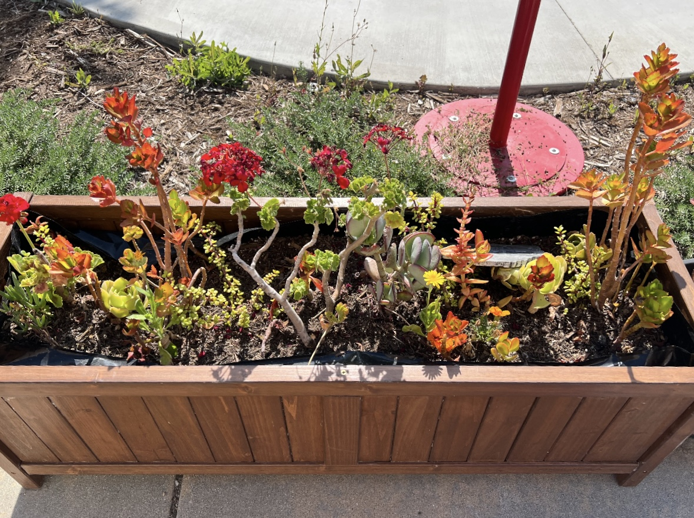
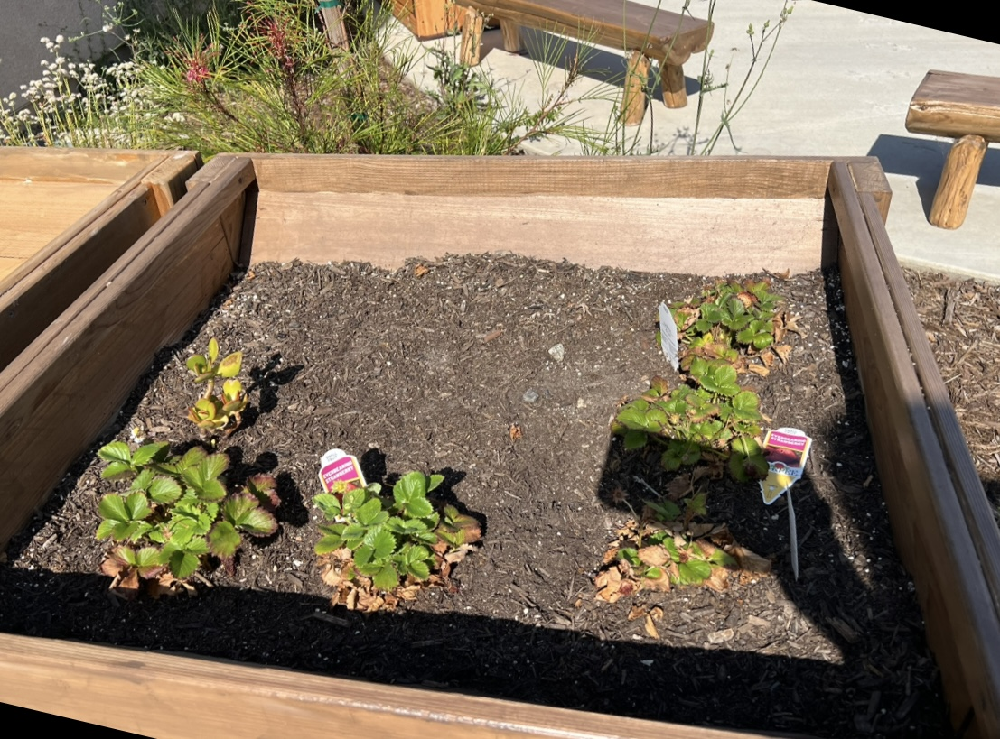
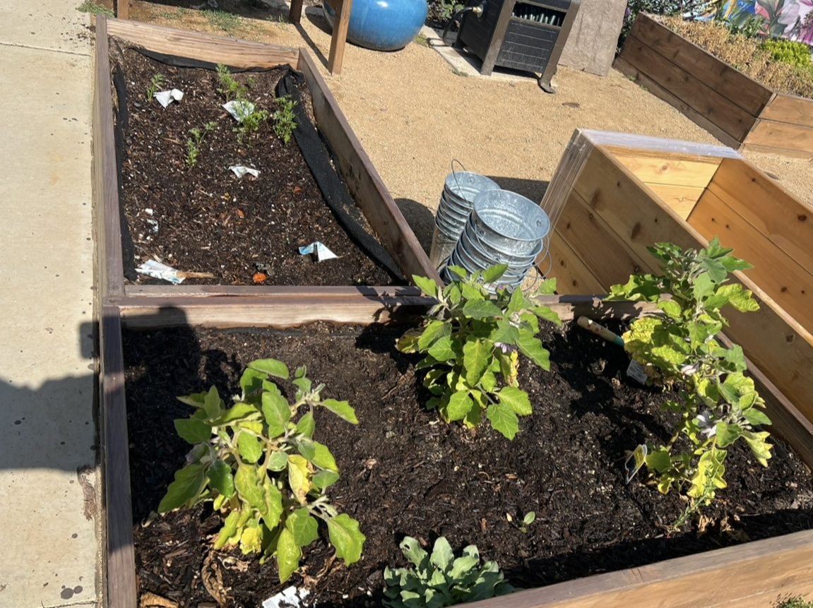
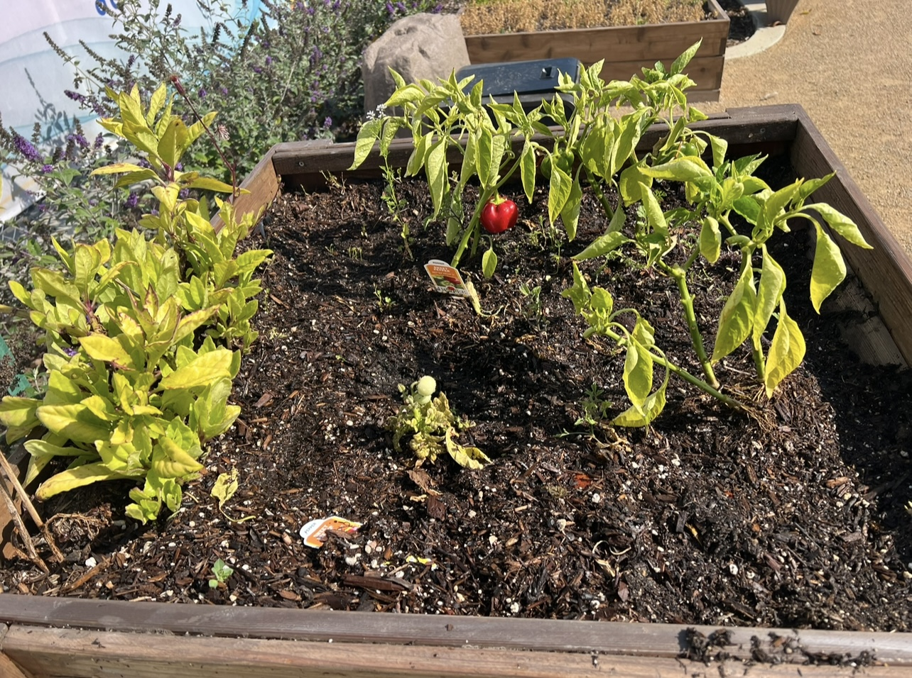
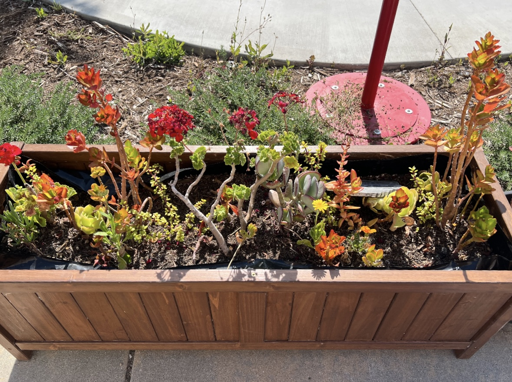
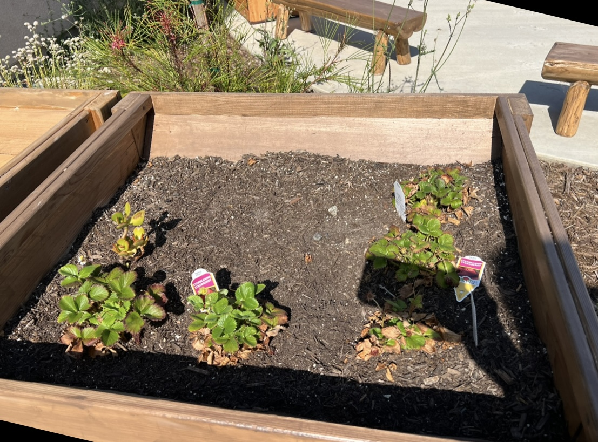
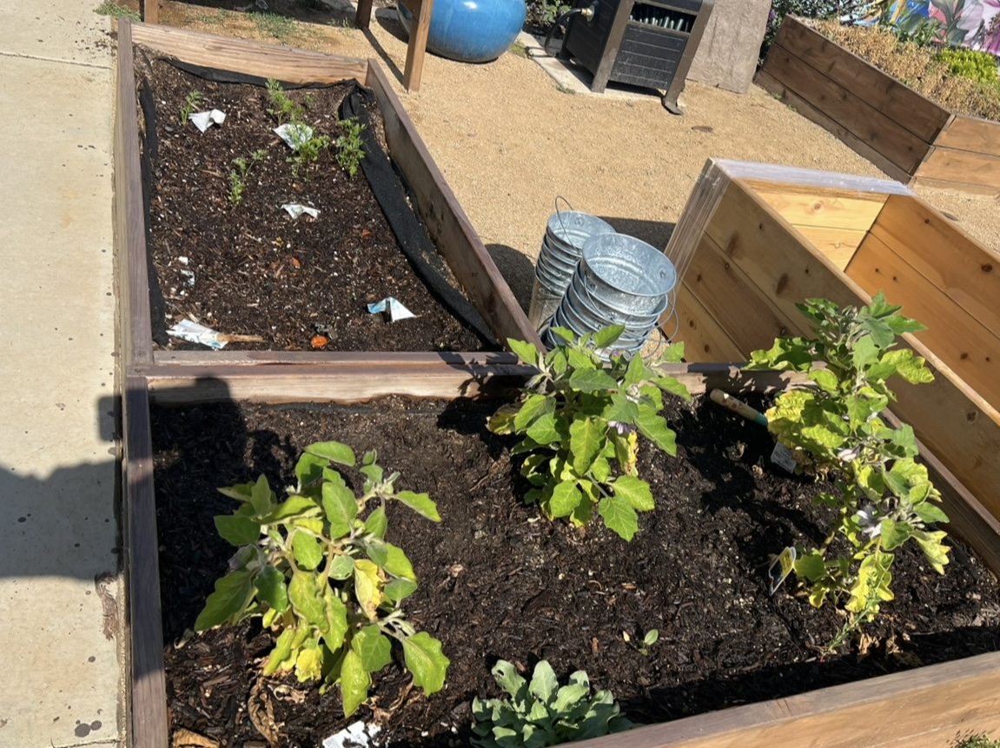
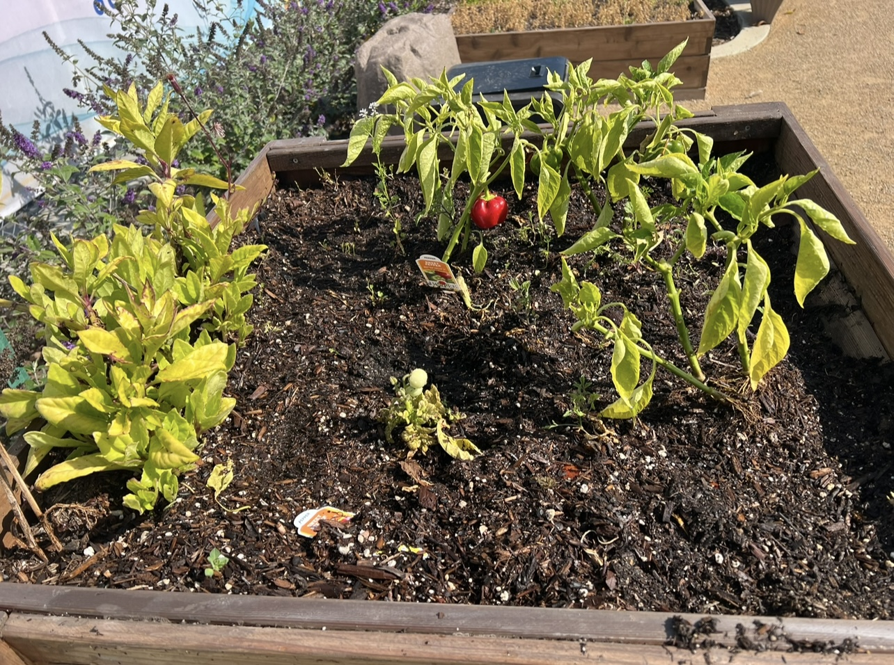
 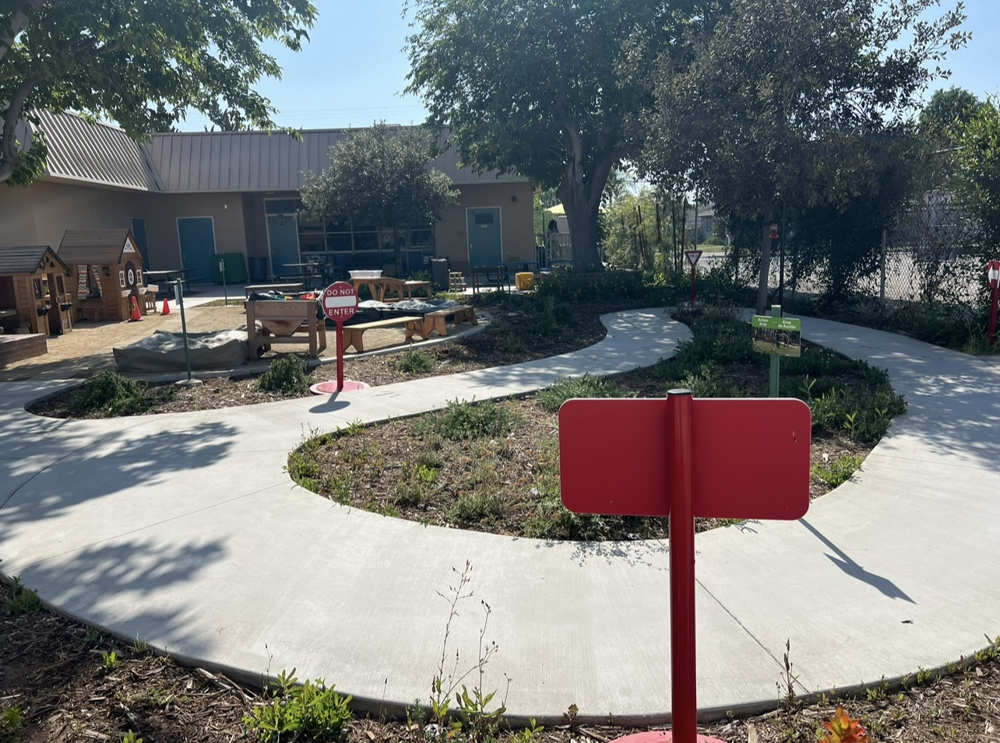
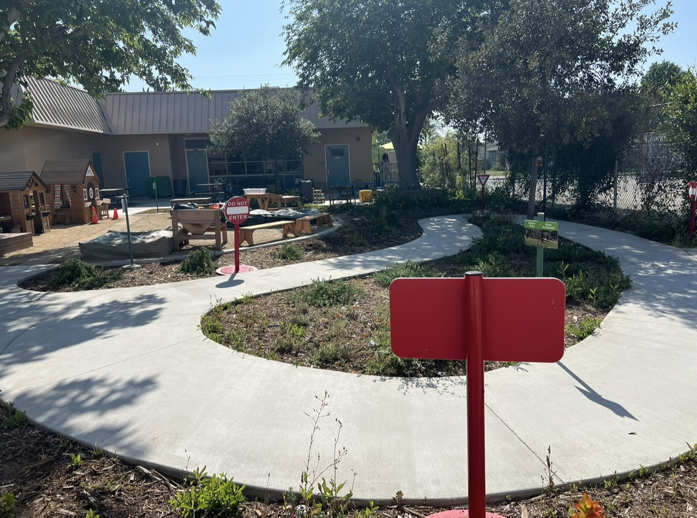
 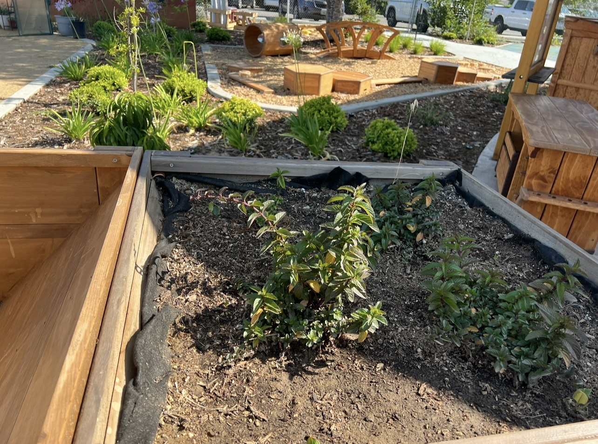
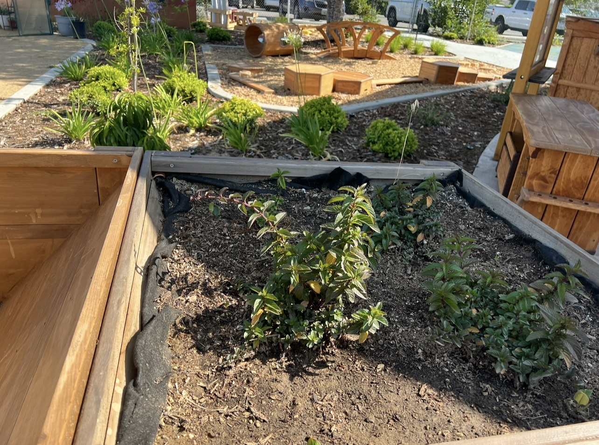
These images were captured over the years documenting our harvest, our individual
plant beds and the helpful volunteers we couldn't live without.
📸 Want your garden featured?
Send us your photo!